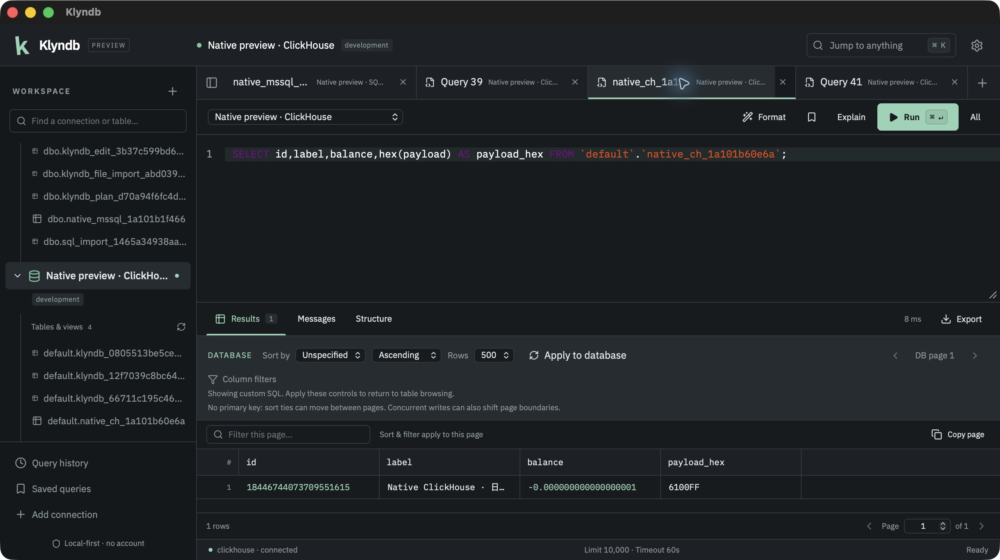
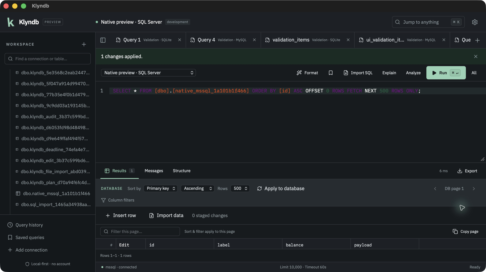
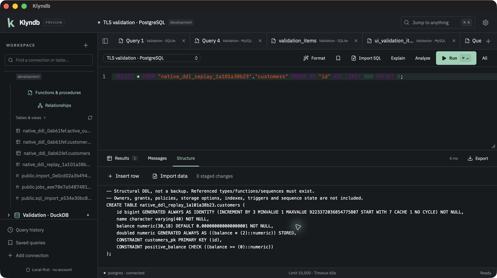
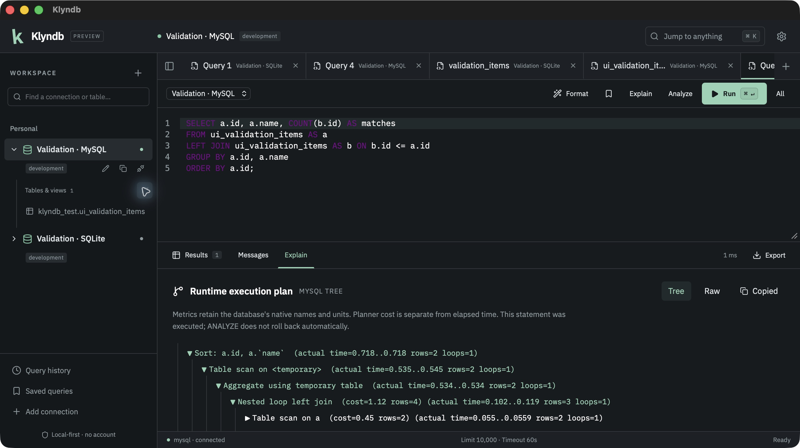

KLYNDB / DOCUMENTATION
Make yourself
at home.
From your first connection to your next data import. This guide covers the currently implemented desktop workflow.
01 / Run the preview
Download Preview 2 for macOS Apple Silicon. Choose the DMG or app ZIP and copy Klyndb.app to Applications while the existing app is closed. The release includes checksums and native validation evidence. To build from source, install Rust stable, Node.js 22.12+ and the Tauri prerequisites for your platform. Linux additionally needs Secret Service/DBus development libraries. Remembering a password requires an unlocked OS keychain.
git clone https://github.com/OthmaneBlial/klyndb.git
cd klyndb/apps/desktop
npm ci
npm run tauri devTo build a native package from the desktop directory:
npm run tauri buildPreview 2 is ad-hoc signed, without Apple notarization; macOS may prevent opening it. Native acceptance covers the complete SQLite preview workflow and additional PostgreSQL, MySQL, DuckDB, SQL Server, ClickHouse, MongoDB and Redis slices on macOS 26.6 arm64. MariaDB native acceptance remains pending. Windows/Linux, Intel Macs and other macOS versions remain unverified. Read the release guide for checksums and scope.
02 / Connect to a database
Choose New connection, pick PostgreSQL, MySQL, MariaDB or SQLite and enter a connection URL or select a local SQLite file. Use Test connection before saving. Expand Network to set a 1–300-second connection timeout (default 10); query timeout is separate. Add an environment label and enable read-only mode when needed.
DuckDB
Building the current source also gives you DuckDB. Choose it in New connection, browse to a local .duckdb file, or use + to create one when connecting. No server password is needed. Browse schemas and tables, run SQL, cancel queries and export results through the same workspace.
Use explicit BEGIN, COMMIT and ROLLBACK for SQL writes. Choose Explain for a native estimated plan or Analyze for a confirmed runtime plan, including real writes. Analyze does not roll back automatically and is disabled on read-only connections.
Choose Relationships for tables, columns, PKs and ordered foreign-key links, with zoom/pan, saved local layouts and SVG export. Structure shows the same foreign-key mappings. Read-only files support diagrams too. DuckDB rejects cross-schema/catalog foreign keys; native desktop diagram interaction remains pending.
SQL files now use Import SQL, with whole-file review, completed-statement progress and native cancellation. SELECT results are discarded. Script transactions remain under your control; earlier committed effects can survive a failure. Read-only files reject SQL imports.
Reviewed grid editing and CSV/JSON row imports now support scalar DuckDB base tables. Updates/deletes require a primary key; generated columns and detected conversion loss are rejected. Finish an active/failed SQL transaction first: DuckDB has no savepoints, and refusal preserves caller work. Accepted row batches/imports own a transaction, hold the session through parser waits and roll back ordinary failures. The exact Preview 2 app passes a reviewed Unicode grid update and durable file reopening after a full restart. Native SQL-file and row-import interaction remain pending. Automatic extension loading and external file/network SQL access are disabled. Disconnect an open read-write DuckDB connection before Test connection, which uses a read-only probe. A rejected test preserves your existing transaction. See the DuckDB guide for exact types and limits. Available in downloadable Preview 2; read the release guide for its checked workflows.
ClickHouse
Choose ClickHouse in New connection and enter a native TCP URL. This driver uses port 9440 with verified TLS by default, or port 9000 with explicit plaintext for a trusted local server. HTTP endpoints such as port 8123 are unsupported.
clickhouse://default@localhost:9000/default?tls=disabled
clickhouse://alice@database.example.com:9440/analyticsBrowse tables and views in the selected database, inspect columns, data-skipping indexes and native DDL, run SQL in tabs, and export retained results. Large integer and decimal values stay exact. Writes show Affected-row count unavailable because the native client does not expose that count.
CREATE TABLE events (
id UInt64,
label Nullable(String)
) ENGINE = MergeTree ORDER BY id;
INSERT INTO events VALUES (1, 'hello'), (2, NULL);
SELECT id, label FROM events ORDER BY id;Cancel uses a separate native control connection and drains the original response before session reuse. It does not roll back completed writes or stop asynchronous mutations already launched. If interruption cannot be confirmed, Klyndb closes the session and asks you to verify writes before retrying.
Choose Explain for one SELECT query. Native JSON operators and index conditions/parts/granules appear in the shared tree, raw output and exports, including on read-only profiles. Planning can contact data sources to infer schema and uses normal cancellation/deadlines; uncertain interruption closes the session. Runtime Analyze remains disabled in this driver. Exact Preview 2 native macOS estimated tree/raw plan interaction passes; Windows/Linux checks remain pending. Transactions, reviewed grid edits, file imports and relationship diagrams remain unavailable for ClickHouse. Nested types currently require String casts and result columns need distinct aliases. Real-server TCP/TLS and read-only contracts pass. Native macOS source query/catalog/DDL, exact wide integers and decimals, estimated plans, CSV export and Cancel with same-session reuse also pass. Native TLS/client-certificate/SSH and other platform checks remain pending. See the ClickHouse guide for types, security and limits. Available in downloadable Preview 2; read the release guide for its checked workflows.
In the native macOS source app, ClickHouse returns exact wide integers and decimals, renders its MergeTree plan, exports CSV and cancels a query while keeping the session usable. This capture uses synthetic records on a local TCP fixture.

Actual native macOS source debug app. Preview 2 package acceptance is recorded separately in the release guide.
SQL Server
Choose SQL Server in New connection, enter a native TCP URL and use the separate password field. SQL authentication is supported; port 1433 and verified TLS are the defaults. Choose a custom CA under TLS when your server uses a private certificate authority.
mssql://alice@database.example.com:1433/analyticsBrowse schema-qualified tables and views; inspect columns, indexes, foreign-key mappings, constraints and user triggers; filter/sort/page data, run SQL and export retained results. BIGINT and DECIMAL values remain exact. SQL exports preserve Unicode text and binary values. Arbitrary query affected counts are unavailable rather than shown as zero; reviewed table edits report native direct-change counts.
DECLARE @maximum bigint = 9223372036854775807;
SELECT @maximum AS exact_integer;
SELECT CAST('-0.000000000000000001' AS decimal(38,18)) AS exact_decimal;Select the whole batch or use Execute all to preserve variables across statements. Use explicit BEGIN TRANSACTION, COMMIT and ROLLBACK; the native transaction indicator follows XACT_STATE. Cancellation waits for the server acknowledgement before session reuse, but does not promise rollback. A row limit can stop later statements in the batch; verify writes before retrying.
Read-only mode is a client SQL guard; restricted server permissions provide a server-enforced boundary. Reviewed insert/update/delete now supports disk-based base tables through the grid. Updates and deletes require a primary key; generated columns are protected. Bound values, exact conversion checks and locked old-row comparisons protect the batch. Existing or implicit transactions leave edits pending; use COMMIT or ROLLBACK. A table-wide lock remains until the transaction ends. CSV/JSON imports now use the shared file preview/mapping workflow and the same bound writer. One transaction/savepoint spans the whole file, and late parse/constraint errors roll back earlier imported batches. Explicit/implicit transactions leave successful imports pending. Cancellation waits for native cleanup; uncertain completion closes the connection. Relationship diagrams now use native ordered foreign keys, including composite/self/cross-schema references, through the shared layout and SVG export view. Read-only connections can inspect diagrams. Explain now requests a native non-executing estimate. Analyze requires confirmation and reports actual operator rows/executions, including writes; it does not roll back automatically. Native CPU/I/O/subtree costs remain estimates, and no per-operator runtime timings are invented. Plan settings are cleaned up before reuse. SQL files now preserve native GO batch boundaries and DECLARE variable scope through the shared review/progress/cancel workflow. Broader catalogs and integrated authentication remain pending. MONEY/SMALLMONEY columns need a DECIMAL cast, and some vendor DDL remains outside the SQL validator grammar. The SQL Server guide lists the exact behavior and validation limits. Available in downloadable Preview 2; read the release guide for its checked workflows.
The native macOS source app verifies SQL Server TLS, multi-result batches, table Structure, reviewed editing, estimated and confirmed runtime plans, reviewed GO SQL imports, mapped CSV imports, CSV exports and Cancel with same-session reuse. This capture uses synthetic records on a local server. Native JSON row imports, diagrams and packaged/platform checks remain pending.

Actual native macOS source debug app. Preview 2 package acceptance is recorded separately in the release guide.
Server connections
Server passwords are stored separately from connection metadata in your OS keychain. Saved credential lookup shares the connection timeout. If an OS authorization prompt remains unanswered, handle it before retrying or enter session-only credentials in Edit connection. TLS verification is enabled by default. See the security model for local history and connection details.
For private servers, expand TLS & certificates and choose a public PEM/DER CA file through the native picker, then test and connect. Certificate and hostname checks stay enabled. Keep the saved file available for reconnects; a custom CA requires verified TLS. For PostgreSQL/MySQL/MariaDB and the ClickHouse source controls, choose a PKCS#12 client identity when required and enter its separate certificate password. SQL Server client identities remain pending. You can remember that password in the OS keychain. Private keys stay in the native TLS layer. Read the TLS guide for setup and limits.
For a database behind a bastion, expand SSH tunnel, enter the SSH host, username and independently verified SHA256 host-key fingerprint, then choose agent, private-key or password authentication. The database URL names the host reachable from the bastion; keep its certificate hostname for verified TLS. SSH secrets use a separate OS keychain entry, and private keys stay in the native layer. The Network deadline covers SSH plus database setup. See the SSH guide for setup and limits.
To reset an open session, choose Reconnect beside the connection or in the command palette. Review the confirmation: uncommitted transactions, temporary tables and session settings are discarded. Finish running work and apply or discard staged edits first. SQL tabs and completed results are kept, and queries are never replayed. If opening fails, the connection stays closed. Session-only passwords must be entered again through Edit connection. Read the connection guide for details. Reconnect has real four-engine backend coverage and native macOS SQLite checks. Other engines’ native reconnect and Windows/Linux checks remain pending.
Once connected, open a table from the explorer or create an SQL tab. Metadata sections vary by driver. SQLite, PostgreSQL and MySQL/MariaDB expose columns, indexes, foreign keys, constraints, user triggers and available table DDL. PostgreSQL exposes native constraint definitions and trigger firing modes; SQLite and MySQL/MariaDB show constraint definitions in table DDL. Trigger visibility follows your database permissions.
Browse functions & procedures
In PostgreSQL, MySQL, MariaDB and SQL Server, choose Functions & procedures beneath the connected database, or use Browse functions & procedures in the command palette. Search schema or routine names and use Previous/Next to browse 100 routines at a time.
Select a signature to inspect native parameter/return types, language and the server-provided definition. PostgreSQL overloads and MySQL/MariaDB same-name functions/procedures stay separate. Choose Open in SQL tab to review or edit it on the same connection; opening and inspecting do not execute SQL.
Read-only connections can browse too. Catalogs load on demand, and definitions load only after selection. Native permissions govern visibility; encrypted SQL Server source is unavailable. System routines, PostgreSQL aggregates and SQL Server CLR routines are excluded. Check database/schema context and DEFINER before executing edited definitions; unsupported compound SQL can be refused by normal validation. Native desktop acceptance remains pending. Read the routine guide for limits. This browser is included in Preview 2; native desktop acceptance remains pending.
Redis · a workspace for your keys
Preview 2 includes a dedicated Redis key explorer. Choose Redis in New connection, enter redis://default@host:6379/0 and use the separate password field. TLS verifies the hostname by default; custom CA, PKCS#12 client identity and the shared SSH controls are available. Actual macOS source-app checks verify native scan/type/TTL/value inspection, exact reads, production Cancel/Confirm, read-only refusal and a real delayed reply across a tab switch. The exact Preview 2 app also passes six types/TTL and production Cancel/Confirm with independent server checks. Native TLS/mTLS/SSH, delayed-reply/draft restoration and other platform acceptance remain separate.
Enter a glob such as cache:* and choose Scan keys. Follow Next scan step until the native cursor returns to zero. Empty intermediate steps and repeated keys are valid; COUNT is a hint. No entire keyspace is loaded on connection.
Select a key for its native type, TTL and value: strings use 64 KiB byte ranges; lists and streams use 100-item ranges; hashes, sets and sorted sets use native scan cursors. Integers remain exact and binary keys/values display hexadecimal bytes.
["HSET", "profile:42", "name", "Ada"]Choose Run command, or Cmd/Ctrl+Enter in the console. Rust rejects read-only writes and requires confirmation for production changes. Command drafts, search patterns, completed scans and replies remain in memory across tab switches. Redis result caches share a 16 MiB estimated payload budget; reconnect clears cached server data without replaying commands. Use EXPIRE, PERSIST and ordinary type/data commands to manage keys.
Each native request has a 10-second deadline and bounded replies. Transport failures close the session without replay; verify write effects before reconnecting and retrying. Administrative/session commands, scripts, transactions, blocking calls, Cluster/Sentinel and module keys remain unsupported. Read the Redis guide for exact command scope and limits.
Redis scans, inspections, command replies and errors remain with their tab when they arrive after a tab switch. Returning during a pending request keeps its controls guarded; nothing is replayed. If production-write classification finishes while you are away and the command has not been confirmed, it is not submitted. Return and run it again to review.
Restore unsent drafts
Enable Restore MongoDB and Redis drafts after restart in Workspace settings to retain query/command text and target namespaces or key patterns. It is off by default: literals are stored locally without encryption and may be sensitive. Server results, catalogs, cursors, confirmations and document-edit drafts are excluded. Reconnect and run explicitly; requests never execute automatically. Reload MongoDB collection metadata before editing. Turning restoration off removes saved drafts on the next successful workspace save while retaining current text in memory; this is not secure erasure. Text fields are limited to 1 MiB each and the workspace to 8 MiB; save errors are visible.
Actual macOS source-app close/relaunch checks restore independent MongoDB and Redis drafts with closed connections and empty server data. Disabling keeps live text, removes saved draft copies and restores empty defaults on the next launch. Other platforms and updated public packages remain pending.
MongoDB
Choose MongoDB in New connection. Use a single-seed mongodb:// or mongodb+srv:// URL and the separate password field. Verified TLS is the default; SRV requires it. Custom CA files and combined certificate/private-key PEM identities, including encrypted PKCS#8 keys, are supported. Available in downloadable Preview 2; read the release guide for its checked workflows.
mongodb://alice@database.example.com:27017/analytics?authSource=adminOpen Documents, enter a database or list authorized databases, then Load collections on demand. Run a JSON find filter and optional sort, or switch to a read-only aggregation pipeline. Results use 100-document pages with JSON and expandable Tree inspection; choose Indexes for native metadata.
[{"$match":{"active":true}},{"$group":{"_id":"$region","customers":{"$sum":1}}}]Canonical Extended JSON preserves ObjectId, dates, binary, Decimal128 and 64-bit integers as text. Review single-document inserts, replacements and deletes before confirming. Production and read-only guards run in Rust; replacements/deletes use the original BSON document to detect concurrent changes. Native numeric equality applies. Aggregation results, views and time-series are read-only here.
Each document is limited to 1 MiB, each serialized page to 8 MiB, and requests have 10-second deadlines with bounded cleanup. Automatic retries, write pipelines and server JavaScript are disabled. If a write fails after submission, reconnect and refresh before retrying. Real MongoDB 8.0.32 backend/TLS/mTLS contracts pass. The macOS source debug app also verifies native connection, 205-document paging, exact BSON, indexes, reviewed insert/replace/delete and Cancel, grouping/tree inspection and independent tab restoration. Broader native desktop, SRV/replica-set/SSH/platform acceptance, cancellation controls, document file import/export remain pending. Document tabs retain query drafts, completed results and selection in memory across tab switches, including late replies. Write acknowledgement remains visible if refreshing its results fails. Returning during a pending request keeps its controls guarded. Late replies from a cleared session or closed/reassigned tab are discarded. The document cache has a 16 MiB estimated payload budget; older results are cleared with a notice while drafts remain. Reconnect clears original write snapshots and requires collection metadata reload before editing. Nothing is replayed automatically. Read the MongoDB guide for scope and limits.
PostgreSQL · Structure and materialized views
Preview 2 shows structural PostgreSQL table/view DDL in Structure: native types, defaults, identity options, generated expressions, collations and named constraints. Materialized views also appear in the catalog with native columns; their definitions use WITH NO DATA. Inspection never executes the definition or changes the session transaction/search path.
Actual macOS source-app checks verify table/view/materialized Structure, exact numeric results and noneditable view rows. Updated public packages and other platforms remain pending. Generated identity definitions now use the editor-supported option order. The actual macOS source app replays its displayed identity/generated-column definition through the normal editor, verifies identity/default/generated values and inspects identical recreated DDL. Handwritten identity options in other orders may still be refused. Use the check_option view parameter instead of trailing WITH LOCAL CHECK OPTION; broader native DDL parsing remains pending.

Definitions above 2 MiB show a notice. This is not a backup: referenced objects must exist, and owners/grants/policies, sequence state, storage options, indexes/triggers and view-column defaults are excluded. Partitioned/inherited/foreign-table DDL shows an unavailable notice. Use PostgreSQL dump tools for complete recreation. Preview 2 native acceptance verifies identity/generated DDL replay. See the PostgreSQL guide for scope and validation.
Source builds also show Statistics for ordinary PostgreSQL tables and materialized views: planner row estimates plus table, index and total storage in bytes. Unknown estimates show Unavailable. These are estimates, not live counts; inspection never scans rows or runs ANALYZE. Ordinary views and other engines omit this section. The native macOS source app verifies this section on an ordinary table through a real PostgreSQL TLS connection. Broader native/platform checks remain pending; downloadable Preview 2 does not include statistics.
03 / Write SQL
Run the current statement, a selected range or the entire SQL file. Results stream from Rust into a disk-backed spool; the virtualized grid reads bounded pages. Source builds now complete schema-qualified tables and alias. columns from native metadata on demand. Same-named tables require their schema. Metadata refresh preserves editor text, selection and undo history; CTE/subquery column inference and native desktop completion acceptance remain pending.
Find and reuse queries
Current source builds add search to Saved queries and Query history. Match SQL, saved names, connection labels or history errors; filter by the original connection, favorites or failed executions. Profile labels include the engine and environment.
Choose a history entry’s bookmark to name a saved copy of its exact SQL and original connection. Opening or saving an entry does not execute it. Unavailable profiles keep their SQL recoverable with Run disabled until you choose and connect a profile. History retains the latest 500 executions locally. Downloadable Preview 2 predates these controls; see the query library guide.
Find a SQL error
Choose Go to SQL error in a failed result or Messages, or beside a validation error. The editor focuses the reported position in the statement, selection or full SQL you submitted. Your SQL stays unchanged.
SQLite and PostgreSQL query positions and supported preflight validation positions are available when the database or parser reports them. The button disappears after you edit that SQL. Errors without a trustworthy position retain their original message; internal PostgreSQL queries, generated plans and reframed SQL Server GO batches do not receive an editor pointer. Native desktop acceptance of this new control remains pending.
| Shortcut | Action |
|---|---|
| Cmd/Ctrl + Enter | Run selection or current statement |
| Cmd/Ctrl + K | Open command palette |
| Shift + Cmd/Ctrl + F | Format SQL |
| Cmd/Ctrl + S | Save query |
Settings control query timeout, row limit, theme and editor font size. Table views offer Database controls for server-side column filters, sorting and 100/250/500-row pages. Apply the controls to run a fresh query; the SQL appears in the editor. Primary keys break sort ties, but concurrent writes can shift page boundaries. The grid’s separate quick text filter and column-header sorting apply only to the fetched page. Arbitrary SQL tabs keep their existing result-spool pages. Read the table browsing guide for details.
04 / Review your changes
On editable base tables, stage updates, inserts and deletions, then review and apply the batch. Klyndb uses bound values and checks the old row values to detect conflicts. Generated columns are protected.
Grid editing supports SQLite, PostgreSQL, MySQL/MariaDB InnoDB tables plus DuckDB scalar base tables and SQL Server disk-based base tables in Preview 2. Updates and deletes need an appropriate primary key. Views and nontransactional MySQL tables are not staged-write destinations.
Use BEGIN, COMMIT and ROLLBACK in the SQL editor to manage manual transactions. On SQLite, PostgreSQL, MySQL/MariaDB and SQL Server, CSV/JSON row imports and edits inside an existing transaction remain uncommitted. DuckDB requires finishing the existing transaction first; each accepted row batch/import owns a transaction and rolls back on ordinary failure. SQL files follow their own transaction commands. The status indicator reflects the native session state.
05 / Move your data
CSV and JSON import
Append rows into SQLite, PostgreSQL, MySQL/MariaDB InnoDB tables plus DuckDB scalar base tables and SQL Server disk-based base tables in Preview 2. DuckDB imports require an idle session and retain its lock through all parser waits; generated columns and detected conversion loss are rejected. SQL Server imports retain a table-wide lock until the transaction ends.
- Open an editable table and choose Import data.
- Select CSV, JSON object array or Klyndb JSON export, then choose a UTF-8 file through the native picker.
- For CSV, set the separator, optional NULL token and whitespace options. For JSON, use an array of objects with the same field names, or the app’s typed JSON array export. Update the preview after changing format or parsing options.
- Map each source field to an existing destination column, or ignore it. Review value types and sample records.
- For a production connection, confirm that you reviewed the file and mapping. Choose Append rows.
Progress shows parsed records; final inserted rows appear after native completion. Cancellation waits for database and parser cleanup. Imports append data rather than replacing a table.
Files are limited to 512 MiB; quoted multiline fields, UTF-8 BOM and comma, semicolon, tab or pipe separators are supported. JSON NULL and exact numbers are decoded in Rust; destination database types still apply. Malformed records, duplicate keys and trailing data fail with rollback. JSONL import remains planned. Read the complete import guide for limits and transaction behavior.
SQL files
Available on SQLite, PostgreSQL and MySQL/MariaDB, plus DuckDB and SQL Server in Preview 2. SQL Server preserves native GO batch boundaries and variable scope.
Choose Import SQL on a connected SQL tab or from the command palette. Select a UTF-8 file in the native picker, review the statement count, clipped sample and warnings, then confirm execution. Rust checks the entire private snapshot before running any SQL.
The script runs in order on one locked session. SELECT results are discarded. Progress counts completed statements, or completed native batches for SQL Server; cancellation and the configured timeout stop later units. The script controls its own transactions: earlier statements can remain committed after failure, and MySQL DDL can commit implicitly. Review the shown transaction state and use COMMIT or ROLLBACK in the editor when required.
Files are limited to 512 MiB and individual statements or SQL Server batches to 4 MiB. SQL Server accepts standalone GO lines; GO repeat counts, SQLCMD commands/substitutions and vendor syntax outside the parser remain unsupported. Imports require QUOTED_IDENTIFIER ON. Verify effects in a failing native batch before retrying. Other client directives, COPY STDIN/STDOUT streams and unsupported compound bodies are refused during preflight. See the import guide for supported syntax and lexical settings.
Export
Choose Export from a completed result set, select CSV, JSON, JSONL, SQL INSERT or Markdown, and save through the native dialog. Rust streams the retained result without copying the full dataset into the interface.
06 / Understand execution
Choose Explain for a native estimated plan. Expand the tree, inspect raw output and review server messages. Where supported, runtime analysis requires confirmation because it executes the query and its side effects.

Actual packaged macOS workflow with a disposable MySQL database.
SQLite exposes QUERY PLAN without invented runtime timings. SQL Server supports estimated SELECT/DML plans and confirmed runtime profiling with actual rows/executions. Runtime data previews are bounded while remaining rows are drained for the profile. A missing native profile reports that execution completed; verify writes before retrying. See the execution-plan guide for each engine’s behavior.
07 / Explore relationships
Choose Relationships above a connected database’s table list. Select tables and load their native foreign keys, including composite keys and self-references. Drag tables or the background, zoom and use Fit to explore the selected area.
Save a local layout for that connection and reopen it with fresh metadata. Export the full displayed diagram as SVG through the native save dialog. Loading reads metadata, without scanning table rows or modifying your database.
Diagrams support SQLite, PostgreSQL, MySQL and MariaDB, plus DuckDB and SQL Server in Preview 2. Read-only files/connections can load the same native graph. Start with a focused area: up to 50 tables and 2,000 columns per diagram. Read the diagram guide for limits and controls.
Preview & support
Klyndb already supports common relational workflows. It does not yet cover every DBeaver feature. Multi-hop SSH, additional drivers, broader metadata and other platforms’ release packages remain on the roadmap.
Try it on a development database. If something fails, report a reproducible issue with your engine, platform and steps, excluding passwords and sensitive data.
Compatibility matrix ↗ · Validation evidence ↗ · Contributing ↗